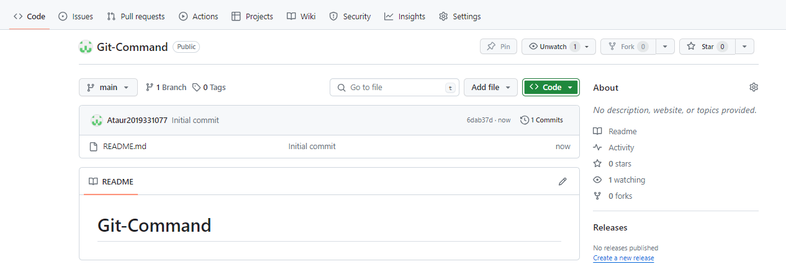

https://github.com/username/repository.git is the same link that you copied for clone the project.
Now go to your github profile. Then create a new repository.
Now you will see like below
Now click on the green button named code and copy the link of the repository.
Now open your terminal and go the directory where you want to clone this project.
Now you will use your first git command. Get ready.
git clone https://github.com/username/repository.git(the link that you copied)
This command will clone the project that you have just created on github some moment ago.
Now we will initialize our repository into git.
git init
Now you can add files and project files on this directory.
To include new files or changed files in the directory you need to run the below command:
git add .
If you want to include specific files:
git add file_name1 file name2
To save the files locally run the command.
git commit -m "initial commit"
here "initial commit" is the message to show what you have changed. Here you can write whatever you want.
Now we will connect remotely this directory to github directory:
git remote add origin https://github.com/username/repository.git
It's time to upload the files into github repository. You can do this by run the command below:
git push -u origin master
It will upload on your master branch.
However if you want to change your branch you can run the command and then you can push:
git checkout -b main
If there is conflict in your local files with github repository files then push command will not work properly. However, if you want to upload your files forcibly, then run the code below:
git push -f origin main
In conclusion, mastering these essential Git commands equips you with the necessary tools to efficiently manage your projects, collaborate seamlessly, and navigate the world of version control with confidence. Happy coding!